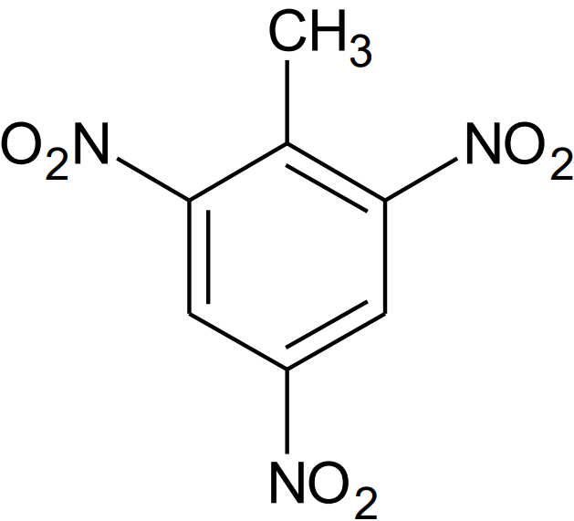

MIPA.com
Home
Materi
Game
Quiz
Kalkulator
Sign Up
Quiz Online
Nama:
No. Absen:
Nilai:
I. Pilihan Ganda
1. Diketahui kubus ABCD.EFGH dengan panjang rusuk 8 cm. Jarak titik H ke garis AC adalah...
8√3 cm
8√2 cm
4√6 cm
4√3 cm
4√2 cm
2. Limas ABCD berikut merupakan limas segitiga beraturan. Jarak titik A ke garis BE adalah...
3√2 cm
2√6 cm
6 cm
4√3 cm
8 cm
3. Diketahui y = x sin x, maka y" + y adalah...
2 cos x
sin x cos x
cos x
cos x - sin x
2 cos x - 1
4. Nilai stasioner dari fungsi f(x) = 2 sin x adalah...
-2 dan 2
-1 dan 1
0
0 dan 1
0 dan 2
5. Perhatikan diagram berikut ini!
Mutasi yang terjadi pada potongan DNA tersebut adalah...
translokasi
inversi
insersi
transversi
transisi
6. Apabila melihat seseorang dengan ciri-ciri seperti pada gambar, seseorang tersebut memiliki kelebihan satu kromosom, tepatnya pada kromosom nomor...
13
14
15
21
22
7. Pada gambar rangkaian listrik berikut A, B, C, D, dan E adalah lampu pijar identik.
Jika lampu B dilepas, lampu yang menyala lebih terang adalah...
A dan D
A dan C
C dan D
C dan E
D dan E
8. Besar arus listrik yang melewati hambatan 4 Ω pada rangkaian listrik DC pada gambar di bawah ini adalah...
1,25 A
1,100 A
0,75 A
0,25 A
0,50 A
9. Struktur molekul benzena sebagai berikut.
Atom-atom hidrogen yang terikat oleh atom C, kedudukannya pada...
C3 = C2
C2 = C5
C3 = C5
C1 sampai dengan C6 tidak sama
C1 sampai dengan C6 sama
Nama yang tepat untuk senyawa turunan benxena di bawah ini adalah...

2, 4, 6-trinitro benzena
2, 4, 6-trinitro toluena
1, 3, 5-trinitro benzena
1, 3, 5-trikloro toluena
2, 4, 6-nitro benzena
II. Jawaban Singkat
1. Diketahui kubus ABCD.EFGH yang panjang rusuknya 8 cm. Titik Q adalah titik tengah rusuk BF. Tentukan jarak titik H ke bidang ACQ.
2. Pada interval 0° ≤ x ≤ 180°, nilai stasioner dari fungsi f(x) = sin 2x diperoleh pada…
3. Perhatikan gambar berikut!
Mutasi yang terjadi pada sepotong DNA tersebut adalah...
4. Perhatikan gambar berikut. Jika sebuah hambatan yang nilainya 4R dirangkaikan pararel pada titik P dan Q maka nilai arus listrik pada rangkaian akan menjadi...
5. Tuliskan nama senyawa turunan benzena berikut ini!
Kirim
© 2023.
MIPA.com .
All Rights Reserved.